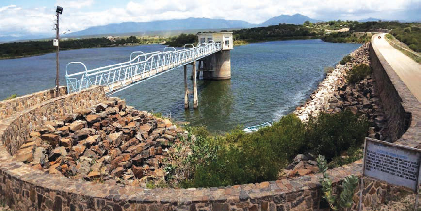
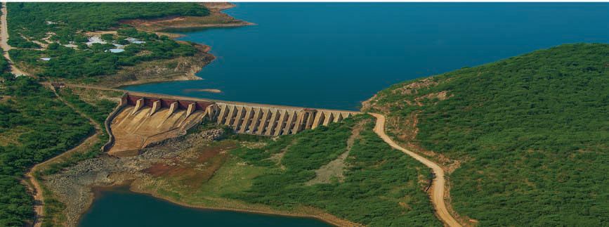

Nyumba ya Mungu dam
Nyumba ya Mungu dam is located in Mwanga district in Kilimanjaro region. Its sources are the Kikuletwa and Lumi rivers. The dam covers an area of 180 square kilometres. It is one of the major dams for electricity generation and is used for irrigation agriculture, mainly in Kilimanjaro and Tanga regions. Figure 6 indicates the Nyumba ya Mungu dam.

Kidatu dam
The Kidatu dam is located in Kilosa district in Morogoro region. Its source is the Great Ruaha River. The dam covers an area of 10 square kilometres and is used for electricity generation through the Kidatu Hydropower Project. In addition, it contributes to flood control and water distribution for agricultural purposes. Figure 7 indicates the Kidatu dam.
